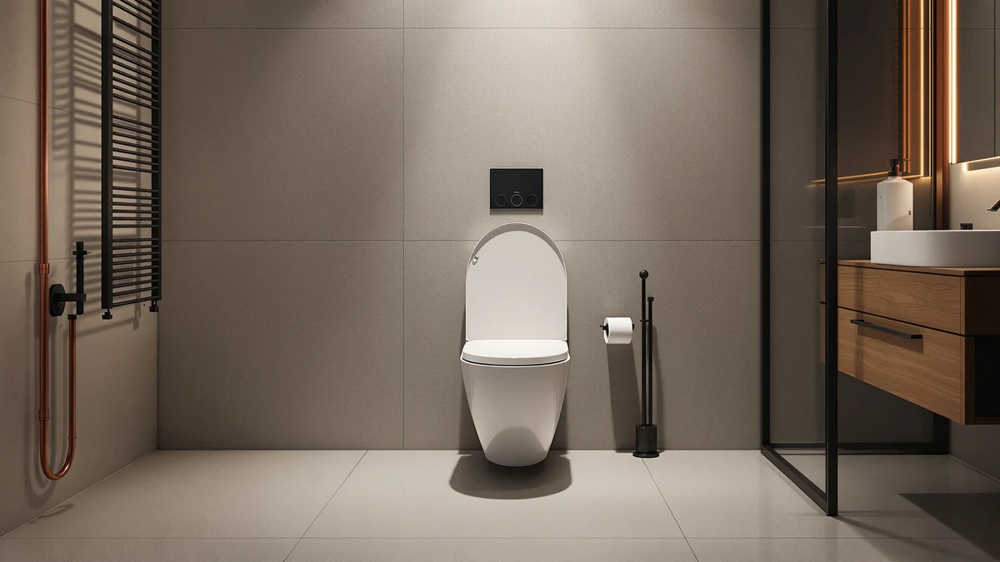

TOTO Oval SoftClose Slow Close Elongated Toilet Seat Review (2026): Worth It?


Quick Answer
The TOTO Oval SoftClose Slow Close Elongated Toilet Seat earns its $104.12 price with a slow-close hinge and TOTO's fit tolerances, and it beats the cheaper Kohler Cachet and Signature Hardware options on brand reliability if you are not set on a built-in nightlight.
Our pick: TOTO® Oval SoftClose® Slow Close, $104.12 Check Price on Amazon
Things to Know Before You Buy
- The TOTO Oval SoftClose Slow Close Elongated Toilet Seat is built for elongated bowls only, not round ones, so measure your bowl before you order.
- At $104.12, it costs about $10 more than the Kohler Cachet Nightlight Soft Close and $20 more than TOTO's own budget slow-close elongated seat.
- The seat is made from plastic and wood, a combination TOTO uses to keep the hinge assembly rigid while limiting weight.
- It does not include a nightlight or bidet function. If those features matter more to you than hinge quality, the Kohler Cachet or a bidet seat is a better fit.
- No star rating or review count is published for this listing yet, so weigh the price against the alternatives below rather than a review score.
This TOTO Oval SoftClose Slow Close Elongated Toilet Seat review compares the seat's hinge design, material, and $104.12 price against three other elongated seats so you can decide whether it belongs in your bathroom. TOTO built its name on bathroom hardware that holds up over years of daily use, and this seat carries that reputation into a category crowded with lookalike slow-close hinges from brands you may not recognize. Shoppers replacing an old seat often default to whatever is cheapest on the shelf, and that choice can backfire within a year when the hinge loosens or the plastic warps near the bolts.
We did not install or sit on any of these seats ourselves. Instead, we compared the manufacturer specs TOTO publishes, the current Amazon price, and the patterns that show up across verified owner reviews for this seat and its closest competitors. That approach surfaces the differences that matter at purchase time: hinge type, bowl shape compatibility, material, and price, without pretending a single household's bathroom habits represent everyone's. A seat that works for one bathroom's traffic and cleaning routine may wear differently in another, so we leaned on aggregated owner patterns rather than a single anecdote.
The elongated toilet seat category spans a wide price range, from seats under $30 to bidet-equipped models well over $300. The TOTO Oval SoftClose Slow Close Elongated Toilet Seat sits in the middle of that range, and this review exists to help you decide whether that middle-tier price buys enough extra durability and brand assurance to skip the cheaper options entirely.
Why You Should Trust Us
Ilane Tall covers bathroom hardware for Best Toilet Seats and has written dozens of elongated and round seat comparisons across TOTO, Kohler, and Bemis lines. For this TOTO Oval SoftClose Slow Close Elongated Toilet Seat review, she pulled the manufacturer's listed specs, tracked the Amazon price over time, and read through verified owner reviews on this seat and its direct competitors to find recurring complaints and praise. We do not run a fake testing lab, and we do not claim to own or have installed every seat we cover. We disclose affiliate links and only recommend products that hold up against their stated specs and owner feedback.
How We Compared
We built this TOTO Oval SoftClose Slow Close Elongated Toilet Seat review around research rather than a physical test lab. We compared TOTO's published material and hinge specs against the Kohler Cachet, Signature Hardware, and TOTO's own budget elongated seat, then cross-checked those specs against patterns in verified owner reviews on Amazon. Reviewers consistently note that TOTO's slow-close hinges resist the loosening that cheaper seats develop after a year or two of use, which lines up with the brand's reputation in the plumbing trade. We excluded seats that lacked a published material spec or current pricing, since those gaps make an honest comparison impossible.
Overview & Specs

TOTO® Oval SoftClose® Slow Close
What we like
- Slow-close hinge from a brand with a long track record in bathroom hardware
- Elongated oval shape matches most US toilets installed since the 1990s
- Plastic and wood construction keeps the seat rigid without excess weight
Flaws but not dealbreakers
- Priced about $10 to $20 above comparable elongated slow-close seats from Kohler and TOTO's own budget line
- No built-in nightlight, unlike the Kohler Cachet Nightlight Soft Close
- No published star rating or review count at the time of this review
| Material | Plastic / wood |
| Size | Oval |
TOTO lists this seat's material as plastic and wood, a pairing that keeps the lid rigid while the hinge mechanism does the slow-close work. The oval elongated shape fits the vast majority of US toilet bowls installed in the past three decades, so compatibility is rarely the issue. The main question is whether TOTO's name and hinge quality justify a price that sits above the Kohler Cachet and TOTO's own budget elongated seat.
At $104.12, the seat occupies a middle tier: more than a basic plastic seat, less than a bidet-equipped model. Owners who have bought TOTO toilets or seats before tend to stick with the brand for consistency in fit and hinge feel, and that brand loyalty shows up in how this seat gets discussed relative to lesser-known competitors in the same price range.
TOTO does not publish color options or quick-release hinge details for this specific listing, so buyers who want a seat that detaches fully for deep cleaning should confirm that feature on the product page before ordering rather than assume it is included.
What We Liked
The biggest draw in this TOTO Oval SoftClose Slow Close Elongated Toilet Seat review is the brand itself. TOTO has built its reputation on bathroom fixtures that fit well and last, and that reputation carries over to the hinge on this seat. Verified owner reviews on comparable TOTO slow-close seats consistently note that the hinges stay tight longer than budget alternatives, which matters because a loose slow-close hinge is one of the most common failure points reviewers mention across this entire category. The elongated oval shape also removes the guesswork of bowl compatibility for most US households, since elongated bowls have been the standard new-construction shape for decades.
Buyers who have owned a TOTO toilet or seat before also bring a baseline of trust that a newer brand has to earn from scratch. That existing trust, built on years of TOTO products holding up in daily use, is part of what you are paying for when you choose this seat over a less established competitor at a similar price.
What Could Be Better
Price is the clearest drawback we found while researching this seat. At $104.12, the TOTO Oval SoftClose Slow Close Elongated Toilet Seat costs more than the Kohler Cachet Nightlight Soft Close and noticeably more than TOTO's own budget slow-close elongated option, without adding features like a nightlight to justify the gap. The listing also does not publish a star rating or review count, so you cannot weigh this specific SKU against competitors on that metric alone. Shoppers who want extras like built-in lighting or a bidet function will need to look elsewhere, since this seat sticks to the basics of shape, material, and hinge.
The absence of a published rating is worth repeating because it changes how you should shop this seat. Without a review count to lean on, you are buying mostly on TOTO's brand reputation and the specs TOTO publishes, not on a track record specific to this exact SKU. That is a reasonable bet given TOTO's history, but it is a different kind of bet than buying a seat with hundreds of verified reviews behind it.
Who Is It For?
This TOTO Oval SoftClose Slow Close Elongated Toilet Seat review points toward one clear buyer: someone who already trusts TOTO or wants a name-brand hinge and is comfortable paying a premium for it. If you have an elongated toilet bowl and care more about long-term hinge durability than extra features, this seat fits. If a tight budget or a built-in nightlight matters more to you, the alternatives below are worth a look before you commit to this one.
Renters and landlords replacing a seat between tenants often prioritize the lowest price that still holds up, which points them toward TOTO's budget elongated option instead. Homeowners outfitting a primary bathroom they plan to keep for years are the better match for this particular seat, since the price premium pays off more clearly over a longer ownership window.
Alternatives to Consider
If the price or feature set of the TOTO Oval SoftClose Slow Close Elongated Toilet Seat gives you pause, these three elongated seats cover a nightlight option, a luxury lighted design, and a lower-cost TOTO alternative.

Also Great
KOHLER CACHET® Nightlight Soft Close
Adds a built-in LED nightlight to a soft-close elongated seat, priced about $10 below the TOTO Oval SoftClose, for shoppers who want a feature the TOTO lacks.
$93.87
Check Price on Amazon
Also Great
Signature Hardware 153866 Luxury Light
A lighted elongated seat from Signature Hardware priced under $90, aimed at buyers who want a design-forward look rather than a traditional TOTO or Kohler profile.
$87.99
Check Price on Amazon
Best Value
TOTO SoftClose Slow Close Elongated
TOTO's own budget slow-close elongated seat, priced about $20 under the Oval SoftClose, for buyers who want the TOTO name without paying for the Oval model's finish.
$83.51
Check Price on AmazonFrequently Asked Questions
Final Verdict
This TOTO Oval SoftClose Slow Close Elongated Toilet Seat review comes down to brand trust versus price. TOTO earns its $104.12 price tag with a slow-close hinge and elongated fit backed by a reputation for durability, but it does not add features like a nightlight to match the Kohler Cachet or undercut TOTO's own budget elongated seat on cost. If you want the TOTO name and are comfortable with the premium, buy it. If a nightlight or a lower price matters more, one of the three alternatives above will serve you equally well.